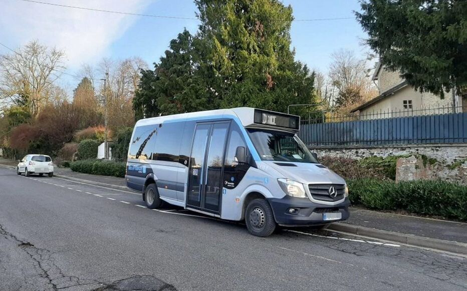

Selected Work
Créer des expériences
visuelles & intuitives.

TàD IDFM
Desktop Case StudyIdentification des frictions UX et refonte globale de l'écosystème de réservation d'Île-de-France Mobilités.
Le Médoc à la Carte
Responsive DesignPlateforme touristique immersive mêlant cartographie interactive et parcours d'itinéraires œnologiques.
Allociné
UX Research & PersonalizationOptimisation de l'algorithme de recommandation et restructuration complète de l'architecture d'information sur Desktop.